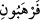
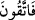

Gazâları, ibâdetleri ve yeme içmesi hep haber verilmiştir.
“Yalnız benden korkun.” Dünyâ menfaatlerini bırakıp gönderdiği kitâba ve Nebî’ye
îmân etmek ve Hakk’a tâbi olmakla benden korktuğunuzu gösterin. Allah Teâlâ böylece
onlara ikinci kez kendisinden korkmalarını emretmiş olmaktadır. Ancak bu emir
birincisinden farklıdır. Birinci emir “ahdi bozma konusunda Benden korkun” mânâsına
gelirken, ikinci emir “Muhammed’in (s.a.) “Tevrât’taki vasıflarını değiştirmek
husûsunda benden korkun” mânâsına gelir. Ya da birinci “korkun” () emri âlimleri
ve câhilleri içine alırken ikinci () “korkun” emri ise özellikle âlimlere
yönelmektedir.